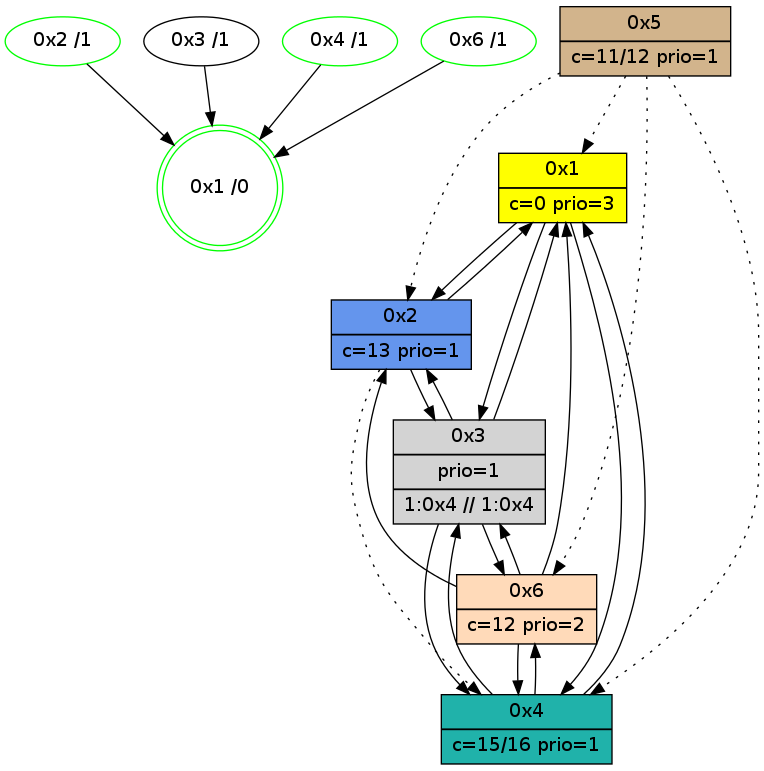

>> << IDX [start] -100 -25 -5 +0 +5 +25 +100 [1085.24820304]
 Previous packets
----------------------------------------------------------------------
1080.327123 beacon01(adaf) #0 coord=01,02,05,03,04,06 cycle=432.0ms assoc
-- color-indic=1 64 ff c1
1080.337083 beacon02(adaf) #0 coord=01,02,05,03,04,06 cycle=432.0ms assoc 64 ae 3e
1080.347084 beacon05(adaf) #0 coord=01,02,05,03,04,06 cycle=432.0ms assoc 64 08 14
1080.357085 beacon03(adaf) #0 coord=01,02,05,03,04,06 cycle=432.0ms assoc 64 94 30
1080.367085 beacon04(adaf) #0 coord=01,02,05,03,04,06 cycle=432.0ms assoc 64 32 1a
1080.377086 beacon06(adaf) #0 coord=01,02,05,03,04,06 cycle=432.0ms assoc 64 46 06
1080.388833 [Hello(2): seq=1374 sym=3,1,4 sysInfo=hasWarning stat=3:15,1,7,1/1:13,10,5,0/4:5,9,2,0]
1080.393275 [Hello(4): seq=887 sym=1,6,3 sysInfo=hasWarning stat=1:4,4,5,0/6:5,15,9,6/3:11,15,15,3]
1080.396946 [Color(4) seq=168 @0:0 color=15/16 prio=1 c=0,7,c;1,4,6,8,9,b,d,e]
----------------------------------------------------------------------
1080.819233 beacon01(adaf) #0 coord=01,02,05,03,04,06 cycle=432.0ms assoc
-- color-indic=1 64 87 6c
1080.829194 beacon02(adaf) #0 coord=01,02,05,03,04,06 cycle=432.0ms assoc 64 d6 93
1080.839194 beacon05(adaf) #0 coord=01,02,05,03,04,06 cycle=432.0ms assoc 64 70 b9
1080.849194 beacon03(adaf) #0 coord=01,02,05,03,04,06 cycle=432.0ms assoc 64 ec 9d
1080.859194 beacon04(adaf) #0 coord=01,02,05,03,04,06 cycle=432.0ms assoc 64 4a b7
1080.869197 beacon06(adaf) #0 coord=01,02,05,03,04,06 cycle=432.0ms assoc 64 3e ab
1080.880902 [Hello(3): seq=886 sym=6,2,1,4 sysInfo=hasWarning stat=6:8,13,3,4/2:11,4,3,0/1:8,10,0,1/4:12,15,4,1]
1080.883570 [Color(2) seq=273 @0:0 color=13 prio=1 c=0,7,c,e,f;1,4,6,8,9,b]
1080.886374 [Hello(1): seq=788 sym=2,4,3 sysInfo=hasWarning,coloring-mode-on,ColoringModeRequestCalled stat=2:4,0,6,0/4:11,15,4,1/3:1,0,2,0]
1080.888437 [Color(6) seq=273 @0:0 color=12 prio=2 c=0,7,d,e,f;1,4,6,8,9,b]
1080.890650 [Color(1) seq=314 @0:0 color=0 prio=3 c=c,d,f;7,e]
----------------------------------------------------------------------
1081.311340 beacon01(adaf) #0 coord=01,02,05,03,04,06 cycle=432.0ms assoc
-- color-indic=1 64 43 03
1081.321301 beacon02(adaf) #0 coord=01,02,05,03,04,06 cycle=432.0ms assoc 64 12 fc
1081.331303 beacon05(adaf) #0 coord=01,02,05,03,04,06 cycle=432.0ms assoc 64 b4 d6
1081.341301 beacon03(adaf) #0 coord=01,02,05,03,04,06 cycle=432.0ms assoc 64 28 f2
1081.351302 beacon04(adaf) #0 coord=01,02,05,03,04,06 cycle=432.0ms assoc 64 8e d8
1081.361302 beacon06(adaf) #0 coord=01,02,05,03,04,06 cycle=432.0ms assoc 64 fa c4
1081.373039 [Hello(2): seq=1375 sym=3,1,4 sysInfo=hasWarning stat=3:0,1,7,1/1:14,11,5,0/4:6,10,2,0]
1081.377473 [Hello(4): seq=888 sym=1,6,3 sysInfo=hasWarning stat=1:5,5,5,0/6:6,0,9,6/3:12,15,15,3]
1081.381143 [Color(4) seq=169 @0:0 color=15/16 prio=1 c=0,7,c;1,4,6,8,9,b,d,e]
----------------------------------------------------------------------
1081.803448 beacon01(adaf) #0 coord=01,02,05,03,04,06 cycle=432.0ms assoc
-- color-indic=1 64 0f b3
1081.813411 beacon02(adaf) #0 coord=01,02,05,03,04,06 cycle=432.0ms assoc 64 5e 4c
1081.823408 beacon05(adaf) #0 coord=01,02,05,03,04,06 cycle=432.0ms assoc 64 f8 66
1081.833409 beacon03(adaf) #0 coord=01,02,05,03,04,06 cycle=432.0ms assoc 64 64 42
1081.843411 beacon04(adaf) #0 coord=01,02,05,03,04,06 cycle=432.0ms assoc 64 c2 68
1081.853412 beacon06(adaf) #0 coord=01,02,05,03,04,06 cycle=432.0ms assoc 64 b6 74
1081.865117 [Hello(3): seq=887 sym=6,2,1,4 sysInfo=hasWarning stat=6:9,14,3,4/2:12,4,3,0/1:9,11,0,1/4:13,0,4,1]
1081.867472 [Hello(1): seq=789 sym=2,4,3 sysInfo=hasWarning,coloring-mode-on,ColoringModeRequestCalled stat=2:5,0,6,0/4:12,0,4,1/3:1,0,2,0]
1081.874338 [Color(1) seq=315 @0:0 color=0 prio=3 c=c,d,f;7,e]
1081.878905 [Color(6) seq=274 @0:0 color=12 prio=2 c=0,7,d,e,f;1,4,6,8,9,b]
----------------------------------------------------------------------
1082.295556 beacon01(adaf) #0 coord=01,02,05,03,04,06 cycle=432.0ms assoc
-- color-indic=1 64 cb dc
1082.305517 beacon02(adaf) #0 coord=01,02,05,03,04,06 cycle=432.0ms assoc 64 9a 23
1082.315516 beacon05(adaf) #0 coord=01,02,05,03,04,06 cycle=432.0ms assoc 64 3c 09
1082.325516 beacon03(adaf) #0 coord=01,02,05,03,04,06 cycle=432.0ms assoc 64 a0 2d
1082.335518 beacon04(adaf) #0 coord=01,02,05,03,04,06 cycle=432.0ms assoc 64 06 07
1082.345518 beacon06(adaf) #0 coord=01,02,05,03,04,06 cycle=432.0ms assoc 64 72 1b
1082.357265 [Hello(2): seq=1376 sym=3,1,4 sysInfo=hasWarning stat=3:1,1,7,1/1:14,12,5,0/4:7,11,2,0]
1082.361710 [Hello(4): seq=889 sym=1,6,3 sysInfo=hasWarning stat=1:6,6,5,0/6:7,1,9,6/3:13,15,15,3]
1082.365350 [Color(4) seq=170 @0:0 color=15/16 prio=1 c=0,7,c;1,4,6,8,9,b,d,e]
----------------------------------------------------------------------
1082.787663 beacon01(adaf) #0 coord=01,02,05,03,04,06 cycle=432.0ms assoc
-- color-indic=1 64 86 db
1082.797625 beacon02(adaf) #0 coord=01,02,05,03,04,06 cycle=432.0ms assoc 64 d7 24
1082.807624 beacon05(adaf) #0 coord=01,02,05,03,04,06 cycle=432.0ms assoc 64 71 0e
1082.817624 beacon03(adaf) #0 coord=01,02,05,03,04,06 cycle=432.0ms assoc 64 ed 2a
1082.827625 beacon04(adaf) #0 coord=01,02,05,03,04,06 cycle=432.0ms assoc 64 4b 00
1082.837624 beacon06(adaf) #0 coord=01,02,05,03,04,06 cycle=432.0ms assoc 64 3f 1c
1082.849323 [Hello(3): seq=888 sym=6,2,1,4 sysInfo=hasWarning stat=6:10,15,3,4/2:13,4,3,0/1:10,12,0,1/4:14,1,4,1]
1082.851452 [Hello(1): seq=790 sym=2,4,3 sysInfo=hasWarning,coloring-mode-on,ColoringModeRequestCalled stat=2:6,0,6,0/4:13,1,4,1/3:2,0,2,0]
1082.854133 [Color(1) seq=316 @0:0 color=0 prio=3 c=c,d,f;7,e]
1082.855648 [Color(2) seq=275 @0:0 color=13 prio=1 c=0,7,c,e,f;1,4,6,8,9,b]
1082.859445 [Color(6) seq=275 @0:0 color=12 prio=2 c=0,7,d,e,f;1,4,6,8,9,b]
----------------------------------------------------------------------
1083.279772 beacon01(adaf) #0 coord=01,02,05,03,04,06 cycle=432.0ms assoc
-- color-indic=1 64 42 b4
1083.289733 beacon02(adaf) #0 coord=01,02,05,03,04,06 cycle=432.0ms assoc 64 13 4b
1083.299732 beacon05(adaf) #0 coord=01,02,05,03,04,06 cycle=432.0ms assoc 64 b5 61
1083.309733 beacon03(adaf) #0 coord=01,02,05,03,04,06 cycle=432.0ms assoc 64 29 45
1083.319733 beacon04(adaf) #0 coord=01,02,05,03,04,06 cycle=432.0ms assoc 64 8f 6f
1083.329735 beacon06(adaf) #0 coord=01,02,05,03,04,06 cycle=432.0ms assoc 64 fb 73
1083.341491 [Hello(2): seq=1377 sym=3,1,4 sysInfo=hasWarning stat=3:2,1,7,1/1:14,12,5,0/4:8,12,2,0]
1083.345901 [Hello(4): seq=890 sym=1,6,3 sysInfo=hasWarning stat=1:7,7,5,0/6:8,2,9,6/3:14,15,15,3]
1083.349572 [Color(4) seq=171 @0:0 color=15/16 prio=1 c=0,7,c;1,4,6,8,9,b,d,e]
----------------------------------------------------------------------
1083.771879 beacon01(adaf) #0 coord=01,02,05,03,04,06 cycle=432.0ms assoc
-- color-indic=1 64 0e 04
1083.781840 beacon02(adaf) #0 coord=01,02,05,03,04,06 cycle=432.0ms assoc 64 5f fb
1083.791841 beacon05(adaf) #0 coord=01,02,05,03,04,06 cycle=432.0ms assoc 64 f9 d1
1083.801841 beacon03(adaf) #0 coord=01,02,05,03,04,06 cycle=432.0ms assoc 64 65 f5
1083.811843 beacon04(adaf) #0 coord=01,02,05,03,04,06 cycle=432.0ms assoc 64 c3 df
1083.821842 beacon06(adaf) #0 coord=01,02,05,03,04,06 cycle=432.0ms assoc 64 b7 c3
1083.833547 [Hello(3): seq=889 sym=6,2,1,4 sysInfo=hasWarning stat=6:11,0,3,4/2:14,4,3,0/1:11,13,0,1/4:15,2,4,1]
1083.836011 [Hello(1): seq=791 sym=2,4,3 sysInfo=hasWarning,coloring-mode-on,ColoringModeRequestCalled stat=2:7,1,6,0/4:14,2,4,1/3:2,0,2,0]
1083.838710 [Color(1) seq=317 @0:0 color=0 prio=3 c=c,d,f;7,e]
1083.841615 [Color(2) seq=276 @0:0 color=13 prio=1 c=0,7,c,e,f;1,4,6,8,9,b]
1083.844815 [Color(6) seq=276 @0:0 color=12 prio=2 c=0,7,d,e,f;1,4,6,8,9,b]
----------------------------------------------------------------------
1084.263987 beacon01(adaf) #0 coord=01,02,05,03,04,06 cycle=432.0ms assoc
-- color-indic=1 64 ca 6b
1084.273947 beacon02(adaf) #0 coord=01,02,05,03,04,06 cycle=432.0ms assoc 64 9b 94
1084.283947 beacon05(adaf) #0 coord=01,02,05,03,04,06 cycle=432.0ms assoc 64 3d be
1084.293948 beacon03(adaf) #0 coord=01,02,05,03,04,06 cycle=432.0ms assoc 64 a1 9a
1084.303949 beacon04(adaf) #0 coord=01,02,05,03,04,06 cycle=432.0ms assoc 64 07 b0
1084.313949 beacon06(adaf) #0 coord=01,02,05,03,04,06 cycle=432.0ms assoc 64 73 ac
1084.325746 [Hello(2): seq=1378 sym=3,1 asym=4 sysInfo=hasWarning stat=3:3,1,7,1/1:14,12,5,0/4:9,13,2,0]
1084.330122 [Hello(4): seq=891 sym=1,6,3 sysInfo=hasWarning stat=1:8,8,5,0/6:9,3,9,6/3:15,15,15,3]
1084.333792 [Color(4) seq=172 @0:0 color=15/16 prio=1 c=0,7,c;1,4,6,8,9,b,d,e]
1084.336777 [STC(1) #0.181 new-neigh,tree-change,inconsistent-stability,stable,to-color d=0]
----------------------------------------------------------------------
1084.756095 beacon01(adaf) #0 coord=01,02,05,03,04,06 cycle=432.0ms assoc
-- color-indic=1 64 94 0a
1084.766057 beacon02(adaf) #0 coord=01,02,05,03,04,06 cycle=432.0ms assoc 64 c5 f5
1084.776057 beacon05(adaf) #0 coord=01,02,05,03,04,06 cycle=432.0ms assoc 64 63 df
1084.786057 beacon03(adaf) #0 coord=01,02,05,03,04,06 cycle=432.0ms assoc 64 ff fb
1084.796056 beacon04(adaf) #0 coord=01,02,05,03,04,06 cycle=432.0ms assoc 64 59 d1
1084.806057 beacon06(adaf) #0 coord=01,02,05,03,04,06 cycle=432.0ms assoc 64 2d cd
1084.817948 [STC(4)->1 #0.181 new-neigh,tree-change,inconsistent-stability,stable,to-color d=1]
1084.819588 [Hello(1): seq=792 sym=2,4,3 sysInfo=hasWarning,coloring-mode-on,ColoringModeRequestCalled stat=2:7,2,6,0/4:14,2,4,1/3:2,0,2,0]
1084.821651 [Hello(3): seq=890 sym=6,2,1,4 sysInfo=hasWarning stat=6:12,1,3,4/2:15,4,3,0/1:12,14,1,1/4:0,3,4,1]
1084.823688 [STC(2)->1 #0.181 new-neigh,tree-change,inconsistent-stability,stable,to-color d=1]
1084.825926 [TreeStatus(4)-.->1 #0.181 new-neigh,tree-change,inconsistent-stability,stable child=1]
1084.827228 [Color(1) seq=318 @0:0 color=0 prio=3 c=c,d,f;7,e]
1084.829069 [STC(3)->1 #0.181 new-neigh,tree-change,inconsistent-stability,to-color d=1]
1084.830597 [Color(2) seq=277 @0:0 color=13 prio=1 c=0,7,c,e,f;1,4,6,8,9,b]
1084.837066 [Color(6) seq=277 @0:0 color=12 prio=2 c=0,7,d,e,f;1,4,6,8,9,b]